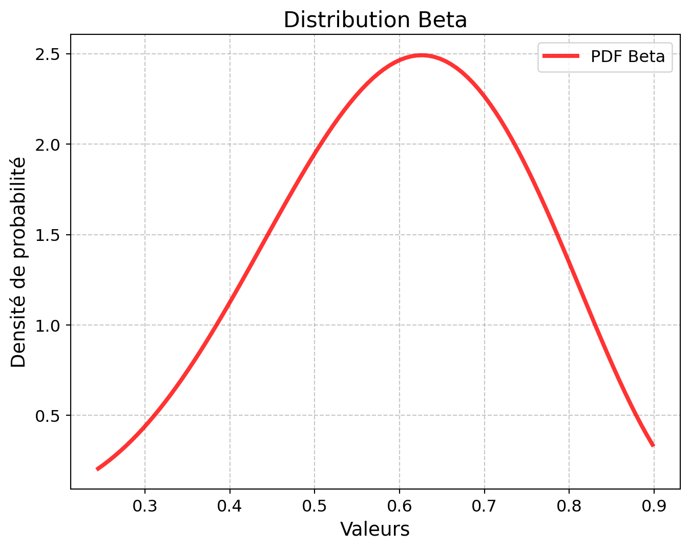
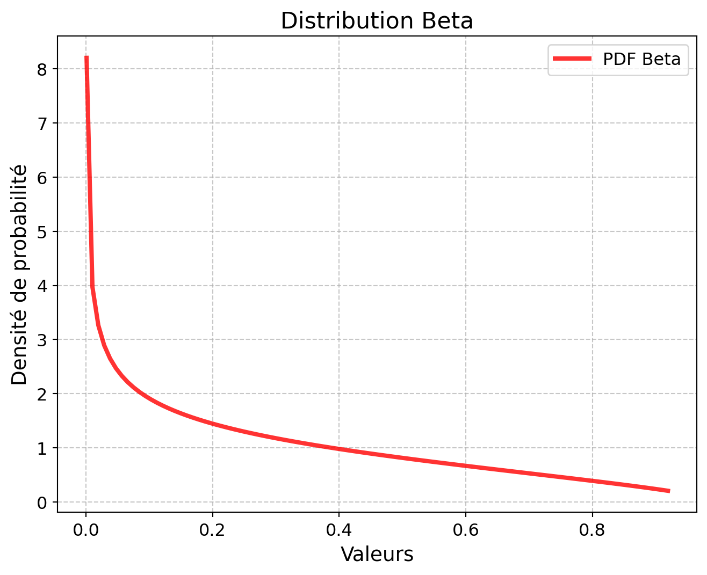
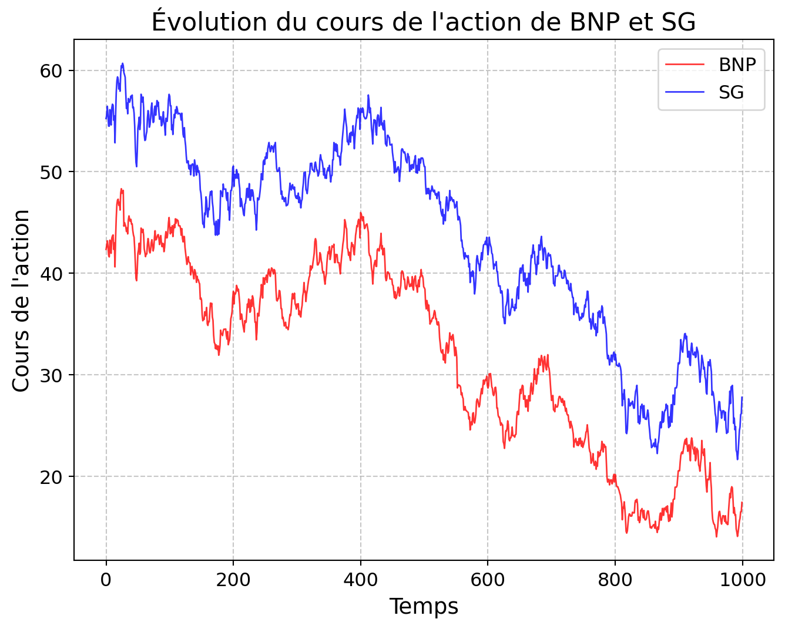
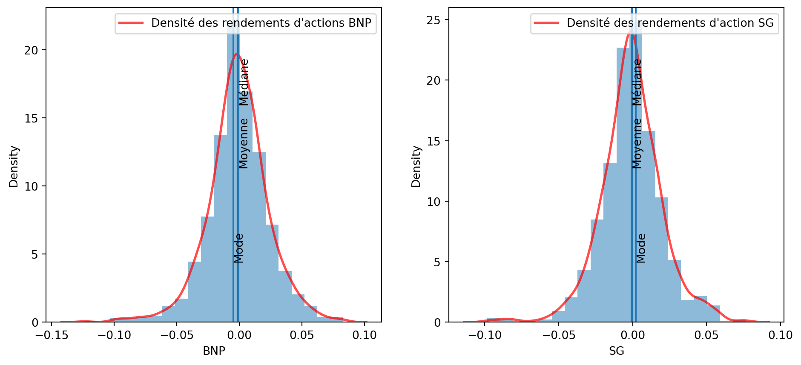
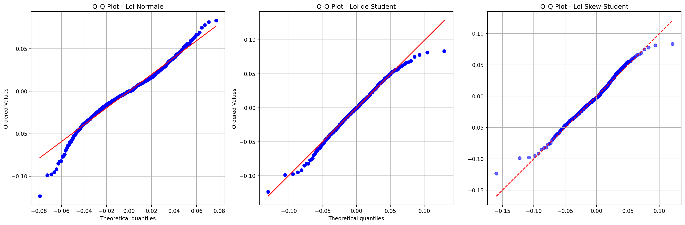
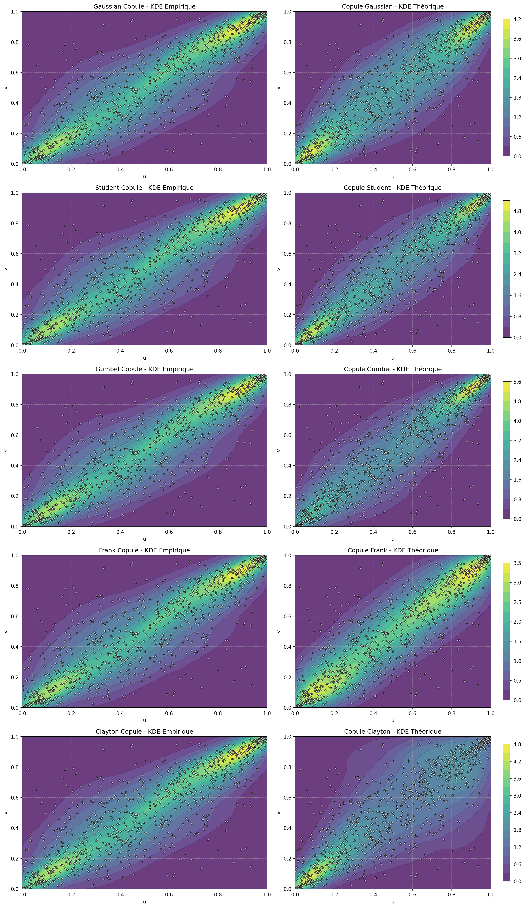
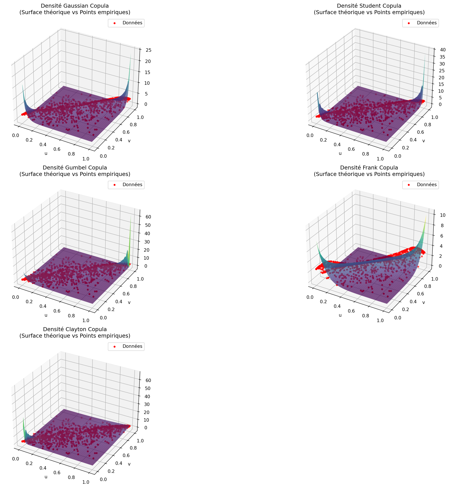

Code
import numpy as np
import pandas as pd
import matplotlib.pyplot as plt
import scipy.stats as stats
from scipy.stats import binom, norm, skew, kurtosis, t, beta
from scipy.optimize import minimize
import seaborn as snsimport numpy as np
import pandas as pd
import matplotlib.pyplot as plt
import scipy.stats as stats
from scipy.stats import binom, norm, skew, kurtosis, t, beta
from scipy.optimize import minimize
import seaborn as snsdef pd_from_cds(spread_bp, maturity, recovery=0.40):
"""
Fonction pour extraire les probabilité de défaut implicite
"""
# Conversion bp -> décimal (1bp = 0.0001)
spread = spread_bp / 10000
lambda_ = spread / (1 - recovery)
pd = 1 - np.exp(-lambda_ * maturity)
return pd# Pour BNP
pd_bnp_4y = pd_from_cds(100, 4)
pd_bnp_5y = pd_from_cds(120, 5)
# Pour SG
pd_sg_4y = pd_from_cds(120, 4)
pd_sg_5y = pd_from_cds(150, 5)
print("PD BNP 4 ans :", pd_bnp_4y)
print("PD BNP 5 ans :", pd_bnp_5y)
print("PD SG 4 ans :", pd_sg_4y)
print("PD SG 5 ans :", pd_sg_5y)PD BNP 4 ans : 0.06449301496838222
PD BNP 5 ans : 0.09516258196404048
PD SG 4 ans : 0.07688365361336424
PD SG 5 ans : 0.11750309741540454# Pour carctériser les distributions des taux de recouvrement, on suppose que les recouvrement
# suivent une loi Beta
# On déduit les paramètres à partir de la moyenne et de la volatilité
def beta_params(mean, vol):
"""
Fonction qui retourne les paramètres de la loi Beta à partir de la moyenne et de la volatilité
"""
a_chapeau = (mean**2 * (1 - mean))/(vol**2) - mean
b_chapeau = (mean**2 * (1 - mean)**2)/(mean * vol**2) - (1- mean)
return a_chapeau, b_chapeau# Pour BNP (moyenne 60 %, vol 15 %)
mean_bnp = 0.60
vol_bnp = 0.15
a_chapeau_bnp, b_chapeau_bnp = beta_params(mean_bnp, vol_bnp)
# Pour SG (moyenne 30 %, vol 25 %)
mean_sg = 0.30
vol_sg = 0.25
a_chapeau_sg, b_chapeau_sg= beta_params(mean_sg, vol_sg)
print("BNP Beta parameters: alpha =", a_chapeau_bnp, "beta =", b_chapeau_bnp)
print("SG Beta parameters: alpha =", a_chapeau_sg, "beta =", b_chapeau_sg)BNP Beta parameters: alpha = 5.8 beta = 3.8666666666666676
SG Beta parameters: alpha = 0.708 beta = 1.652import numpy as np
from scipy.stats import beta
import matplotlib.pyplot as plt
def plot_beta_distribution(a_chapeau, b_chapeau):
"""
Affiche un graphique de la distribution Beta avec les paramètres donnés.
Paramètres :
a_chapeau : float : paramètre alpha de la distribution Beta
b_chapeau : float : paramètre beta de la distribution Beta
"""
fig, ax = plt.subplots(1, 1, figsize=(8, 6))
x = np.linspace(beta.ppf(0.01, a_chapeau, b_chapeau),
beta.ppf(0.99, a_chapeau, b_chapeau), 100)
y = beta.pdf(x, a_chapeau, b_chapeau)
ax.plot(x, y, 'r-', lw=3, alpha=0.8, label='PDF Beta')
ax.set_title('Distribution Beta', fontsize=16)
ax.set_xlabel('Valeurs', fontsize=14)
ax.set_ylabel('Densité de probabilité', fontsize=14)
ax.tick_params(axis='both', which='major', labelsize=12)
ax.grid(True, linestyle='--', alpha=0.7)
ax.legend(loc='best', fontsize=12)
plt.show()
plot_beta_distribution(a_chapeau_bnp, b_chapeau_bnp)
plot_beta_distribution(a_chapeau_sg, b_chapeau_sg)
def plot_beta_distribution(a_chapeau_bnp, b_chapeau_bnp, a_chapeau_sg, b_chapeau_sg):
"""
Affiche un graphique de la distribution Beta avec les paramètres donnés.
Affiche les deux distributions Beta sur le même graphique et colorie les surfaces différemment.
Paramètres :
a_chapeau_bnp : float : paramètre alpha de la distribution Beta pour BNP
b_chapeau_bnp : float : paramètre beta de la distribution Beta pour BNP
a_chapeau_sg : float : paramètre alpha de la distribution Beta pour SG
b_chapeau_sg : float : paramètre beta de la distribution Beta spour SG
"""
fig, ax = plt.subplots(1, 1, figsize=(8, 6))
x = np.linspace(0, 1, 1000)
# Calculons des densités de probabilité pour BNP et SG
y_bnp = beta.pdf(x, a_chapeau_bnp, b_chapeau_bnp)
y_sg = beta.pdf(x, a_chapeau_sg, b_chapeau_sg)
# Tracons la densité de probabilité Beta pour BNP (en rouge)
ax.plot(x, y_bnp, 'r-', lw=3, alpha=0.8, label='Courbe de densité BNP')
ax.fill_between(x, y_bnp, color='red', alpha=0.3)
# Tracons la densité de probabilité Beta pour SG (en bleu)
ax.plot(x, y_sg, 'b-', lw=3, alpha=0.8, label='Courbe de densité SG')
ax.fill_between(x, y_sg, color='blue', alpha=0.3)
ax.set_title('Comparaison des Distributions Beta', fontsize=16)
ax.set_xlabel('Valeurs', fontsize=14)
ax.set_ylabel('Densité de probabilité', fontsize=14)
ax.tick_params(axis='both', which='major', labelsize=12)
ax.grid(True, linestyle='--', alpha=0.7)
ax.legend(loc='best', fontsize=12)
plt.show()
plot_beta_distribution(a_chapeau_bnp, b_chapeau_bnp, a_chapeau_sg, b_chapeau_sg)
la courbe de la BNP est davantage décalée vers la droite, sa distribution est davantage concentrée vers la droite comparativement à celle de SG. Ceci suggère ainsi une meilleure performance de BNP en termes de recouvrement.
On s’intéresse ici à l’historique des prix bruts des actions mais également à celui des log rendements car ils representent une mesure normalisée qui permet de mieux apprecier la volatilité des prix.
Les log rendements étant définis comme suit :
$$
= ()
$$
Où :
$ _t $ est le prix de l’action à l’instant t,
$ _{t-1} $ est le prix de l’action à l’instant t-1.
# Chargement des données
data = pd.read_csv("data.txt", sep="\s+", header=0)
data.head()<>:2: SyntaxWarning: "\s" is an invalid escape sequence. Such sequences will not work in the future. Did you mean "\\s"? A raw string is also an option.
<>:2: SyntaxWarning: "\s" is an invalid escape sequence. Such sequences will not work in the future. Did you mean "\\s"? A raw string is also an option.
C:\Users\mokom\AppData\Local\Temp\ipykernel_18364\1367165320.py:2: SyntaxWarning: "\s" is an invalid escape sequence. Such sequences will not work in the future. Did you mean "\\s"? A raw string is also an option.
data = pd.read_csv("data.txt", sep="\s+", header=0)| BNP | SG | |
|---|---|---|
| 0 | 42.36 | 55.24 |
| 1 | 42.72 | 55.59 |
| 2 | 43.20 | 56.45 |
| 3 | 42.67 | 55.55 |
| 4 | 41.81 | 54.50 |
## principales caractéristiques de tendances centrales et de dispersion des prix des actions
data.describe()| BNP | SG | |
|---|---|---|
| count | 1000.000000 | 1000.000000 |
| mean | 31.906254 | 43.532641 |
| std | 9.630129 | 10.007847 |
| min | 14.056200 | 21.667700 |
| 25% | 23.450325 | 36.065350 |
| 50% | 34.353700 | 46.824800 |
| 75% | 40.229375 | 51.291675 |
| max | 48.330000 | 60.680000 |
## Calcul des log rendementsdata_returns = np.log(data/data.shift(1)).dropna()
data_returns.head(3)| BNP | SG | |
|---|---|---|
| 1 | 0.008463 | 0.006316 |
| 2 | 0.011173 | 0.015352 |
| 3 | -0.012344 | -0.016072 |
## principales caractéristiques de tendances centrales et de dispersion log rendements des actions
data_returns.describe()| BNP | SG | |
|---|---|---|
| count | 999.000000 | 999.000000 |
| mean | -0.000888 | -0.000687 |
| std | 0.024441 | 0.020731 |
| min | -0.123524 | -0.098292 |
| 25% | -0.013867 | -0.011830 |
| 50% | -0.000358 | -0.000547 |
| 75% | 0.012526 | 0.011223 |
| max | 0.083225 | 0.076478 |
Nous procédons ci après à des statistiques descriptives plus exhausives. Incluant notamment des test de stationnarité, l’évaluation de l’asymétrie et des niveaux d’aplatissement de nos distributions
from scipy.stats import shapiro
from statsmodels.tsa.stattools import adfuller
def analyze_data(df, name="Dataset"):
"""
Analyse les données du DataFrame fourni et retourne un DataFrame avec :
- Statistiques descriptives
- Tests de stationnarité (Dickey-Fuller)
Paramètres :
df : DataFrame : Doit contenir les colonnes 'Close' et 'Rendement'
name : str : Nom du dataset (optionnel)
Retourne :
results : DataFrame avec toutes les analyses
"""
# Vérification de la présence des colonnes nécessaires
if not {'Close', 'Rendement'}.issubset(df.columns):
raise ValueError("Le DataFrame doit contenir les colonnes 'Close' et 'Rendement'.")
# Statistiques descriptives
results = df[['Close', 'Rendement']].describe()
results['Indicateur'] = ["Nombre", "Moyenne", "Ecart-Type", "Minimum", "Percentile 25%", "Médiane", "Percentile 75%", "Maximum"]
results = results[['Indicateur', 'Close', 'Rendement']]
# Test de stationnarité (Dickey-Fuller)
_, p_value_rend = adfuller(df['Rendement'].dropna())[:2]
_, p_value_close = adfuller(df['Close'].dropna())[:2]
# Kurtosis
kurtosis_rend = df['Rendement'].dropna().kurt()
kurtosis_close = df['Close'].dropna().kurt()
# skewness
skew_rend = df['Rendement'].dropna().skew()
skew_close = df['Close'].dropna().skew()
results = pd.concat([results, pd.DataFrame([["Stationnarité (p)", p_value_close, p_value_rend ]], columns=results.columns)])
results = pd.concat([results, pd.DataFrame([["Asymétrie", skew_close , skew_rend ]], columns=results.columns)])
results = pd.concat([results, pd.DataFrame([["Excess Kurtosis", kurtosis_close, kurtosis_rend ]], columns=results.columns)])
return results
data_bnp = pd.concat([data["BNP"], data_returns["BNP"]], axis=1)
data_bnp.columns = ['Close', 'Rendement'] # Renommage des colonnes
analyze_data(data_bnp)| Indicateur | Close | Rendement | |
|---|---|---|---|
| count | Nombre | 1000.000000 | 999.000000 |
| mean | Moyenne | 31.906254 | -0.000888 |
| std | Ecart-Type | 9.630129 | 0.024441 |
| min | Minimum | 14.056200 | -0.123524 |
| 25% | Percentile 25% | 23.450325 | -0.013867 |
| 50% | Médiane | 34.353700 | -0.000358 |
| 75% | Percentile 75% | 40.229375 | 0.012526 |
| max | Maximum | 48.330000 | 0.083225 |
| 0 | Stationnarité (p) | 0.794391 | 0.000000 |
| 0 | Asymétrie | -0.310893 | -0.331426 |
| 0 | Excess Kurtosis | -1.233209 | 2.016973 |
data_sg = pd.concat([data["SG"], data_returns["SG"]], axis=1)
data_sg.columns = ['Close', 'Rendement'] # Renommage des colonnes
analyze_data(data_sg)| Indicateur | Close | Rendement | |
|---|---|---|---|
| count | Nombre | 1000.000000 | 9.990000e+02 |
| mean | Moyenne | 43.532641 | -6.874575e-04 |
| std | Ecart-Type | 10.007847 | 2.073120e-02 |
| min | Minimum | 21.667700 | -9.829201e-02 |
| 25% | Percentile 25% | 36.065350 | -1.182979e-02 |
| 50% | Médiane | 46.824800 | -5.468895e-04 |
| 75% | Percentile 75% | 51.291675 | 1.122288e-02 |
| max | Maximum | 60.680000 | 7.647830e-02 |
| 0 | Stationnarité (p) | 0.736159 | 8.678531e-09 |
| 0 | Asymétrie | -0.489312 | -1.797332e-01 |
| 0 | Excess Kurtosis | -0.933549 | 2.097393e+00 |
Les cours des actions de BNP et de société générale sont tous deux assez variables sur la période d’étude. Les log rendements associés sont très volatiles, avec une dispersion allant jusqu’à l’ordre de 30 fois supérieur à la valeur absolue de la moyenne
Cette evolution permet d’illustrer de maniere visuelle la forte volatilité des rendements des actions de BNP et de SG
fig, ax = plt.subplots(1, 1, figsize=(8, 6))
ax.plot(data["BNP"], 'r-', lw=1, alpha=0.8, label='BNP')
ax.plot(data["SG"], 'b-', lw=1, alpha=0.8, label='SG')
ax.set_title("Évolution du cours de l'action de BNP et SG", fontsize=16)
ax.set_xlabel('Temps', fontsize=14)
ax.set_ylabel("Cours de l'action", fontsize=14)
ax.tick_params(axis='both', which='major', labelsize=12)
ax.grid(True, linestyle='--', alpha=0.7)
ax.legend(loc='best', fontsize=12)
plt.show()
fig, (ax1, ax2) = plt.subplots(2, 1, figsize=(8, 8))
# Graphique pour BNP
ax1.plot(data_returns["BNP"], 'r-', lw=1, alpha=0.8, label='BNP')
ax1.set_title("Évolution du cours des rendements de l'action BNP", fontsize=16)
ax1.set_xlabel('Temps', fontsize=14)
ax1.set_ylabel("Rendements des actions", fontsize=14)
ax1.tick_params(axis='both', which='major', labelsize=12)
ax1.grid(True, linestyle='--', alpha=0.7)
ax1.legend(loc='best', fontsize=12)
# Graphique pour SG
ax2.plot(data_returns["SG"], 'b-', lw=1, alpha=0.8, label='SG')
ax2.set_title("Évolution du cours des rendements de l'action SG", fontsize=16)
ax2.set_xlabel('Temps', fontsize=14)
ax2.set_ylabel("Rendements des actions", fontsize=14)
ax2.tick_params(axis='both', which='major', labelsize=12)
ax2.grid(True, linestyle='--', alpha=0.7)
ax2.legend(loc='best', fontsize=12)
plt.tight_layout()
plt.show()
def HistogPlot(data, label):
sns.kdeplot(data, color = "r", lw=2, alpha=0.7, label=label) # Density
n, bins, patches = plt.hist(
data, bins=20, density=True, histtype="stepfilled", alpha=0.5
) # Histogram
ymax = plt.ylim()[1] # Get the max y value for positioning text
# Ajout de la moyenne
plt.axvline(x=np.mean(data))
plt.text(np.mean(data), ymax * 0.5, "Moyenne", rotation=90)
# Ajout de la médiane
plt.axvline(x=np.median(data))
plt.text(np.median(data), ymax * 0.7, "Médiane", rotation=90)
# Adjout du mode
plt.axvline(x=(bins[n.argmax()] + bins[n.argmax() + 1]) / 2)
plt.text((bins[n.argmax()] + bins[n.argmax() + 1]) / 2, ymax * 0.2, "Mode", rotation=90)
plt.legend()
# Plot
plt.figure(figsize=(18, 5))
ax1 = plt.subplot(131)
HistogPlot(data_returns["BNP"], "Densité des rendements d'actions BNP")
ax2 = plt.subplot(132)
HistogPlot(data_returns["SG"], "Densité des rendements d'action SG")
plt.show()
Dans les deux cas on observe des courbes en forme de cloche, et sensiblement symétrique, ce qui laisse présager une loi normale. Mais les kurtosis excessifs sont supérieurs à 2 et donc des kurtosis supérieurs à 5. Nous allons donc modéliser en plus des lois gaussiennes des lois à queues lourdes, notamment une Student et une Skew Student.
import numpy as np
import matplotlib.pyplot as plt
import scipy.stats as stats
from scipy.stats import norm, t, kstest, skew
from skew_student import* # Import de la Skew-Student
def modeliser_distribution(data):
"""
Modélise une distribution normale, Student et Skew-Student, compare les ajustements et sélectionne la meilleure.
Paramètre :
- data : array NumPy contenant l'échantillon de données.
Retour :
- Un dictionnaire contenant la distribution sélectionnée et les p-values du KS test.
"""
# 1. Estimation des paramètres
mu_norm, sigma_norm = norm.fit(data) # Loi normale
df_t, loc_t, scale_t = t.fit(data) # Loi de Student
mu_skew, sigma_skew, gamma_skew, nu_skew = optimize_parameters(data) # Loi Skew-Student
print("--"*10,"PARAMETRES ESTIMES", "--"*10)
print(f"Loi Normale - Moyenne: {mu_norm:.3f}, Écart-type: {sigma_norm:.3f}")
print(f"Loi de Student - df: {df_t:.3f}, Moyenne: {loc_t:.3f}, Échelle: {scale_t:.3f}")
print(f"Loi Skew-Student - μ: {mu_skew:.3f}, σ: {sigma_skew:.3f}, γ: {gamma_skew:.3f}, ν: {nu_skew:.3f}")
print("--"*30)
# 2. Affichage des Q-Q Plots juxtaposés
fig, axes = plt.subplots(1, 3, figsize=(18, 6)) # 3 colonnes pour ajouter la Skew-Student
# Q-Q Plot pour la loi Normale
stats.probplot(data, dist="norm", sparams=(mu_norm, sigma_norm), plot=axes[0])
axes[0].set_title("Q-Q Plot - Loi Normale")
axes[0].grid()
# Q-Q Plot pour la loi de Student
stats.probplot(data, dist="t", sparams=(df_t, loc_t, scale_t), plot=axes[1])
axes[1].set_title("Q-Q Plot - Loi de Student")
axes[1].grid()
# Q-Q Plot pour la loi Skew-Student
sorted_data = np.sort(data)
n = len(data)
quantiles_skew = skew_student_ppf((np.arange(1, n + 1) - 0.5) / n, mu_skew, sigma_skew, gamma_skew, nu_skew)
axes[2].scatter(quantiles_skew, sorted_data, color="blue", alpha=0.6)
axes[2].plot(quantiles_skew, quantiles_skew, 'r--') # Ligne théorique (y=x)
axes[2].set_title("Q-Q Plot - Loi Skew-Student")
axes[2].grid()
plt.tight_layout()
plt.show()
# 3. Test KS (Kolmogorov-Smirnov)
ks_stat_norm, ks_pval_norm = kstest(data, "norm", args=(mu_norm, sigma_norm))
ks_stat_t, ks_pval_t = kstest(data, "t", args=(df_t, loc_t, scale_t))
# KS-Test pour la Skew-Student
np.random.seed(42)
sim_data = skew_student_sim(mu_skew, sigma_skew, gamma_skew, nu_skew, size = 100_000)
ks_stat_skew, ks_pval_skew = kstest(data,sim_data)
print(f"KS Test - Loi Normale: Stat={ks_stat_norm:.3f}, p-value={ks_pval_norm:.3f}")
print(f"KS Test - Loi de Student: Stat={ks_stat_t:.3f}, p-value={ks_pval_t:.3f}")
print(f"KS Test - Loi Skew-Student: Stat={ks_stat_skew:.3f}, p-value={ks_pval_skew:.3f}")
# 4. Sélection de la meilleure distribution
p_values = {"Normale": ks_pval_norm, "Student": ks_pval_t, "Skew-Student": ks_pval_skew}
best_dist = max(p_values, key=p_values.get) # Sélectionne la distribution avec la plus grande p-value
print(f" Distribution sélectionnée: {best_dist}")
return {
"Distribution": best_dist,
"p-value Normale": ks_pval_norm,
"p-value Student": ks_pval_t,
"p-value Skew-Student": ks_pval_skew
}from skew_student import *
from scipy.stats import kstest, norm, t, ks_2samp
# Modélisation des rendement
print("Modélisation des rendements des actions BNP\n")
resultats_BNP = modeliser_distribution(data_returns["BNP"])
print("--"*30,"\n")
print("Modélisation des rendements des actions SG\n")
resultats_SG = modeliser_distribution(data_returns["SG"])Modélisation des rendements des actions BNP
C:\Users\mokom\AppData\Local\Python\pythoncore-3.14-64\Lib\site-packages\scipy\optimize\_differentiable_functions.py:728: UserWarning: delta_grad == 0.0. Check if the approximated function is linear. If the function is linear better results can be obtained by defining the Hessian as zero instead of using quasi-Newton approximations.
self.H.update(delta_x, delta_g)
C:\Users\mokom\AppData\Local\Python\pythoncore-3.14-64\Lib\site-packages\scipy\optimize\_differentiable_functions.py:376: UserWarning: delta_grad == 0.0. Check if the approximated function is linear. If the function is linear better results can be obtained by defining the Hessian as zero instead of using quasi-Newton approximations.
self.H.update(self.x - self.x_prev, self.g - self.g_prev)-------------------- PARAMETRES ESTIMES --------------------
Loi Normale - Moyenne: -0.001, Écart-type: 0.024
Loi de Student - df: 4.533, Moyenne: -0.001, Échelle: 0.019
Loi Skew-Student - μ: 0.002, σ: 0.019, γ: -0.152, ν: 4.587
------------------------------------------------------------
KS Test - Loi Normale: Stat=0.055, p-value=0.004
KS Test - Loi de Student: Stat=0.026, p-value=0.487
KS Test - Loi Skew-Student: Stat=0.023, p-value=0.681
Distribution sélectionnée: Skew-Student
------------------------------------------------------------
Modélisation des rendements des actions SG
-------------------- PARAMETRES ESTIMES --------------------
Loi Normale - Moyenne: -0.001, Écart-type: 0.021
Loi de Student - df: 4.593, Moyenne: -0.001, Échelle: 0.016
Loi Skew-Student - μ: -0.002, σ: 0.016, γ: 0.073, ν: 4.585
------------------------------------------------------------
KS Test - Loi Normale: Stat=0.049, p-value=0.015
KS Test - Loi de Student: Stat=0.025, p-value=0.559
KS Test - Loi Skew-Student: Stat=0.029, p-value=0.373
Distribution sélectionnée: StudentA la lecture des QQ_plot, et à l’issu des tests d’adéquation de Kolmogorov smirnov:
les rendements de BNP s’ajustent mieux à l’aide d’une skew-student (confirmation par le test de Kolmogorov-Smirnov, p-value = 0.68). Toutefois les queues de distribution semblent ne pas être bien ajustées.
les rendements de SG s’ajustent aussi bien à l’aide d’une skew-student qu’à l’aide d’une student. Nous privilégions donc un modèle simple en retenant une student (p-value = 0.559, ks-test).
Pour ce faire, nous utilisons les outils suivant:
le dépendogramme,
le coefficient de spearman
le taux de Kendall
from scipy.stats import kendalltau, spearmanr
data_uniform = data_returns.rank(method='average', pct=True)
# Calcul du tau de Kendall
tau, p_value_tau = kendalltau(data_uniform['BNP'], data_uniform['SG'])
# Calcul du coefficient de Spearman
spearman_corr, p_value_spearman = spearmanr(data_uniform['BNP'], data_uniform['SG'])
print(f"Tau de Kendall: {tau:.4f} (p-value: {p_value_tau:.4f})")
print(f"Coefficient de Spearman: {spearman_corr:.4f} (p-value: {p_value_spearman:.4f})")Tau de Kendall: 0.6691 (p-value: 0.0000)
Coefficient de Spearman: 0.8410 (p-value: 0.0000)Les coefficients de corrélation de Kendall et de Spearman révèlent une concordance significative entre les log-rendements de BNP et de Société Générale. Ces résultats indiquent que les deux séries temporelles évoluent généralement dans la même direction.
data_uniform = data_returns.rank(method='average', pct=True)
# Nuage de points
plt.scatter(data_uniform['BNP'], data_uniform['SG'])
plt.xlabel("BNP")
plt.ylabel("SG")
plt.title("Scatter plot BNP vs SG")
plt.show()
from copulae import GaussianCopula
# 1. Correction des index dupliqués
data_returns = data_returns.reset_index(drop=True)
# 2. Transformation des données en rangs (pour obtenir des valeurs uniformes dans [0, 1])
rank_data = data_returns.rank() / (len(data_returns) + 1)
# 3. Ajustement de la copule Gaussienne sur les rangs
copula_gaussian = GaussianCopula() # 2 variables
copula_gaussian.fit(rank_data.values)
# 4. Génération d'échantillons de la copule (valeurs sur [0, 1])
samples = copula_gaussian.random(len(data_returns))
# 5. Transformation inverse des rangs vers l'échelle originale
# Utilisation de np.percentile qui prend en argument les pourcentages (multipliez par 100)
simulated_BNP = np.percentile(data_returns['BNP'], samples[:, 0] * 100)
simulated_SG = np.percentile(data_returns['SG'], samples[:, 1] * 100)
simulated_returns = pd.DataFrame({
'BNP': simulated_BNP,
'SG': simulated_SG
})
# 6. Visualisation
plt.figure(figsize=(10, 5))
plt.scatter(rank_data['BNP'], rank_data['SG'], alpha=0.5, label="Données réelles", color="blue")
plt.scatter(samples[:, 0], samples[:, 1], alpha=0.5, label="Simulées (Copule Gaussienne)", color="green")
plt.xlabel("BNP")
plt.ylabel("SG")
plt.title("Copule Gaussienne : Réelles vs simulées")
plt.legend()
plt.grid(True)
plt.show()
copula_gaussian.summary()| 1.000000 | 0.860948 |
| 0.860948 | 1.000000 |
import numpy as np
import pandas as pd
from scipy.stats import t as t_dist
from scipy.optimize import minimize
from math import log, gamma, pi, sqrt
# =============================================================================
# 1) Fonctions de densité t-Student (univariée & bivariée) en log
# =============================================================================
def log_t_pdf_univariate(x, df):
"""
Retourne ln[f_nu(x)] pour la loi t univariée de df degrés de liberté.
Formule :
f_nu(x) = Gamma((df+1)/2) / [ sqrt(df*pi)*Gamma(df/2) ] * [1 + x^2/df]^(-(df+1)/2)
"""
c1 = np.log(gamma((df+1)/2)) - np.log(gamma(df/2)) - 0.5*np.log(df*pi)
c2 = -(df+1)/2 * np.log(1 + x**2/df)
return c1 + c2
def log_t_pdf_bivariate(x, y, df, r):
"""
Retourne ln[f_{df,r}(x,y)] pour la t-Student bivariée, corrélation r, df degrés de liberté.
f_{df,r}(x,y) =
Gamma((df+2)/2) / [ Gamma(df/2) * (pi*df) * sqrt(1-r^2) ]
* [1 + 1/df * (x^2 - 2rxy + y^2)/(1-r^2)]^(-(df+2)/2)
On renvoie le log de cette densité.
"""
# Partie constante
log_num_gamma = np.log(gamma((df+2)/2)) - np.log(gamma(df/2))
log_denom = np.log(pi*df) + 0.5*np.log(1 - r**2)
cst = log_num_gamma - log_denom
# Partie quadratique
quad = (x**2 - 2*r*x*y + y**2)/(1 - r**2)
log_noyau = - (df+2)/2 * np.log(1 + quad/df)
return cst + log_noyau
# =============================================================================
# 2) Log-densité de la copule t-Student (bivariée)
# =============================================================================
def log_student_copula_2d(u1, u2, df, r):
"""
Calcule ln[c_{df,r}(u1,u2)] = ln f_{df,r}(x,y) - [ln f_df(x) + ln f_df(y)],
où x = t_{df}^{-1}(u1) et y = t_{df}^{-1}(u2).
- u1, u2 dans [0,1].
- df > 0, r in (-1,1).
"""
# Inversion via la quantile function (ppf) univariée
x = t_dist.ppf(u1, df)
y = t_dist.ppf(u2, df)
# Log densité jointe
log_joint = log_t_pdf_bivariate(x, y, df, r)
# Log densités marginales (univariées)
log_marg_x = log_t_pdf_univariate(x, df)
log_marg_y = log_t_pdf_univariate(y, df)
return log_joint - (log_marg_x + log_marg_y)
# =============================================================================
# 3) Log-vraisemblance négative
# =============================================================================
def negative_log_likelihood(params, data):
"""
Calcule - somme [ ln c_{df,r}(u1,u2) ] sur tout l'échantillon.
data : array shape (n,2) contenant les (u1,u2) dans [0,1].
params : (alpha, beta) --> r, df via reparamétrage :
r = tanh(alpha) --> r in (-1,1)
df = 2 + log(1 + exp(beta)) --> df > 2 (par exemple)
"""
alpha, beta = params
r = np.tanh(alpha) # in (-1,1)
df = 2.0 + np.log1p(np.exp(beta)) # > 2
ll = 0.0
for (u1, u2) in data:
ll += log_student_copula_2d(u1, u2, df, r)
return -ll # On renvoie la -log-vraisemblance
# =============================================================================
# 4) Fonction d'ajustement (fit) par MLE
# =============================================================================
def fit_student_copula_2d(data, alpha0=0.0, beta0=1.0):
"""
Ajuste la copule t-Student bivariée à un échantillon de pseudo-observations 'data' (n,2).
Minimisation de la -log-vraisemblance w.r.t. (alpha,beta).
alpha0, beta0 : valeurs initiales pour (alpha, beta).
Retourne un dict contenant r, df, logLik, etc.
"""
res = minimize(
fun=negative_log_likelihood,
x0=np.array([alpha0, beta0]),
args=(data,),
method='Nelder-Mead'
)
alpha_hat, beta_hat = res.x
r_hat = np.tanh(alpha_hat)
df_hat = 2.0 + np.log1p(np.exp(beta_hat))
ll_hat = -res.fun # log-vraisemblance au point optimum
return {
'r': r_hat,
'df': df_hat,
'logLik': ll_hat,
'success': res.success,
'message': res.message
}
# =============================================================================
# 5) Utilisation sur données data_returns
# =============================================================================
# 1) Transformer vos rendements en pseudo-observations dans [0,1]
rank_data = data_returns.rank(method='average') / (len(data_returns) + 1)
u_data = rank_data.values # numpy array de taille (n,2)
# 2) Ajustement de la copule t-Student bivariée par MLE
result = fit_student_copula_2d(u_data, alpha0=0.0, beta0=1.0)
print("=== Estimation Copule t-Student Bivariée ===")
print(f"Paramètre r estimé = {result['r']:.4f}")
print(f"Paramètre df estimé = {result['df']:.4f}")
print(f"Log-vraisemblance = {result['logLik']:.4f}")
print("Convergence :", result['success'], "|", result['message'])=== Estimation Copule t-Student Bivariée ===
Paramètre r estimé = 0.8496
Paramètre df estimé = 2.0000
Log-vraisemblance = 719.7436
Convergence : True | Optimization terminated successfully.from copulae import GaussianCopula, StudentCopula, GumbelCopula, FrankCopula, ClaytonCopula
from scipy.stats import kendalltau, spearmanr
# Chargement des données
data_returns = data_returns.reset_index(drop=True)
# Transformation en pseudo-observations (rangs normalisés)
rank_data = data_returns.rank() / (len(data_returns) + 1)
# Définition des copules
copules = {
"Gaussian": GaussianCopula(dim=2),
"Student-t": StudentCopula(dim=2, df=2),
"Gumbel": GumbelCopula(dim=2),
"Frank": FrankCopula(dim=2),
"Clayton": ClaytonCopula(dim=2)
}
# Ajustement des copules aux données empiriques
fit_results = {}
for name, cop in copules.items():
if name == "Student-t":
cop.fit(rank_data.values, fix_df=True)
else:
cop.fit(rank_data.values)
fit_results[name] = cop
# Comparaison des mesures de dépendance
empirical_tau, _ = kendalltau(data_returns["BNP"], data_returns["SG"])
empirical_rho, _ = spearmanr(data_returns["BNP"], data_returns["SG"])
results = []
for name, cop in fit_results.items():
simulated_data = cop.random(len(data_returns))
sim_tau, _ = kendalltau(simulated_data[:, 0], simulated_data[:, 1])
sim_rho, _ = spearmanr(simulated_data[:, 0], simulated_data[:, 1])
# Nouveau calcul de la log-vraisemblance via la densité jointe
log_likelihood = np.sum(np.log(cop.pdf(rank_data.values)))
results.append([name, log_likelihood, abs(sim_tau - empirical_tau), abs(sim_rho - empirical_rho)])
# Affichage des résultats
results_df = pd.DataFrame(results, columns=["Copule", "Log-Vraisemblance", "Erreur Kendall Tau", "Erreur Spearman Rho"])
print(results_df.sort_values(by="Log-Vraisemblance", ascending=False)) Copule Log-Vraisemblance Erreur Kendall Tau Erreur Spearman Rho
1 Student-t 720.838328 0.003462 0.000855
2 Gumbel 703.146279 0.007835 0.004465
0 Gaussian 670.141798 0.000534 0.016872
3 Frank 630.219249 0.001741 0.023079
4 Clayton 517.723513 0.091739 0.073704# Visualisation des distributions simulées
plt.figure(figsize=(12, 8))
for i, (name, cop) in enumerate(fit_results.items(), 1):
simulated_data = cop.random(len(data_returns))
plt.subplot(3, 2, i)
plt.scatter(rank_data["BNP"], rank_data["SG"], alpha=0.5, label="Données réelles", color="blue")
plt.scatter(simulated_data[:, 0], simulated_data[:, 1], alpha=0.5, label=f"Simulées ({name})", color="green")
plt.title(f"Copule {name}")
plt.xlabel("BNP")
plt.ylabel("SG")
plt.legend()
plt.tight_layout()
plt.show()
from scipy.stats import gaussian_kde
rank_data = data_returns.rank() / (len(data_returns) + 1)
u = rank_data.iloc[:, 0].values
v = rank_data.iloc[:, 1].values
n = len(u)
# Calcul de la statistique empirique V_i (distribution de Kendall)
mask = (u[:, np.newaxis] <= u) & (v[:, np.newaxis] <= v)
counts = mask.sum(axis=1)
V = (counts - 1) / (n - 1) # Ajustement pour l'auto-comparaison
V_trié = np.sort(V)
# Définition des copules à tester
copules = {
"Gaussienne": GaussianCopula(dim=2),
"Student-t": StudentCopula(dim=2, df=2),
"Gumbel": GumbelCopula(dim=2),
"Frank": FrankCopula(dim=2),
"Clayton": ClaytonCopula(dim=2)
}
# Paramètres de simulation
nb_simulations = 100 # Augmenter pour un résultat plus lisse
# Génération des graphiques de Kendall
plt.figure(figsize=(10, 10))
for i, (nom, copule) in enumerate(copules.items(), 1):
# Ajustement de la copule aux données
if nom == "Student-t":
copule.fit(rank_data.values, fix_df=True)
else:
copule.fit(rank_data.values)
# Simulation de plusieurs jeux de données et calcul des statistiques V
V_simulé = np.zeros((nb_simulations, n))
for s in range(nb_simulations):
# Génération de données synthétiques à partir de la copule ajustée
données_simulées = copule.random(n)
# Calcul de V pour les données simulées
u_sim = données_simulées[:, 0]
v_sim = données_simulées[:, 1]
mask_sim = (u_sim[:, np.newaxis] <= u_sim) & (v_sim[:, np.newaxis] <= v_sim)
counts_sim = mask_sim.sum(axis=1)
V_sim = (counts_sim - 1) / (n - 1)
V_simulé[s] = np.sort(V_sim) # Tri des valeurs simulées
# Calcul des valeurs moyennes attendues à partir des simulations
V_attendu = V_simulé.mean(axis=0)
# Tracé du graphique de Kendall avec une ligne fine pour mieux voir l'ajustement
plt.subplot(3, 2, i)
plt.plot(V_attendu, V_trié, lw=1, color='blue', label='Données vs Copule')
plt.plot([0, 1], [0, 1], '--r', lw=1, label='Ajustement parfait')
plt.xlabel(f'Valeurs attendues ({nom})')
plt.ylabel('Valeurs empiriques')
plt.title(f'Copule {nom}')
plt.legend()
plt.grid(True)
plt.tight_layout()
plt.show()
from scipy.stats import gaussian_kde
# Configuration
grid_size = 100 # Résolution de la grille
contour_levels = 15 # Nombre de niveaux de contour
# Préparation des données : transformation en marges uniformes par rang
rank_data = data_returns.rank() / (len(data_returns) + 1)
u = rank_data.iloc[:, 0]
v = rank_data.iloc[:, 1]
# Création de la grille d'évaluation
x = np.linspace(0, 1, grid_size)
y = np.linspace(0, 1, grid_size)
X, Y = np.meshgrid(x, y)
grid_points = np.vstack([X.ravel(), Y.ravel()]).T
# Calcul de la KDE empirique sur les données observées
empirical_kernel = gaussian_kde(rank_data.values.T)
Z_empirical = empirical_kernel(grid_points.T).reshape(X.shape)
# Définition des copules à comparer
copulas = {
"Gaussian": GaussianCopula(dim=2),
"Student": StudentCopula(dim=2, df=2),
"Gumbel": GumbelCopula(dim=2),
"Frank": FrankCopula(dim=2),
"Clayton": ClaytonCopula(dim=2)
}
# Nombre d'observations simulées pour estimer la KDE théorique
n_sim = 5000
# Création de la figure avec une ligne par copule et 2 colonnes (empirique vs théorique)
fig, axs = plt.subplots(nrows=len(copulas), ncols=2, figsize=(15, 25))
plt.subplots_adjust(hspace=0.4)
for idx, (name, copula) in enumerate(copulas.items()):
# Ajustement de la copule aux données
if name == "Student":
copula.fit(rank_data.values, fix_df=True)
else:
copula.fit(rank_data.values)
# Simulation d'un échantillon théorique à partir de la copule ajustée
simulated_data = copula.random(n_sim)
# Calcul de la KDE théorique à partir de l'échantillon simulé
theoretical_kernel = gaussian_kde(simulated_data.T)
Z_theoretical = theoretical_kernel(grid_points.T).reshape(X.shape)
# Affichage de la KDE empirique
ax_emp = axs[idx, 0]
cf_emp = ax_emp.contourf(X, Y, Z_empirical, levels=contour_levels, cmap='viridis', alpha=0.8)
ax_emp.scatter(u, v, s=10, color='white', edgecolors='black', alpha=0.7)
ax_emp.set_title(f'{name} Copule - KDE Empirique')
ax_emp.set_xlabel('u')
ax_emp.set_ylabel('v')
ax_emp.grid(True, linestyle='--', alpha=0.5)
# Affichage de la KDE théorique
ax_theo = axs[idx, 1]
cf_theo = ax_theo.contourf(X, Y, Z_theoretical, levels=contour_levels, cmap='viridis', alpha=0.8)
ax_theo.scatter(u, v, s=10, color='white', edgecolors='black', alpha=0.7)
ax_theo.set_title(f'Copule {name} - KDE Théorique')
ax_theo.set_xlabel('u')
ax_theo.set_ylabel('v')
ax_theo.grid(True, linestyle='--', alpha=0.5)
# Ajout d'une colorbar pour le graphique théorique
fig.colorbar(cf_theo, ax=ax_theo, orientation='vertical', shrink=0.9)
plt.tight_layout()
plt.show()
from mpl_toolkits.mplot3d import Axes3D
fig = plt.figure(figsize=(20, 15))
for idx, (name, copula) in enumerate(copulas.items(), 1):
# Calcul de la densité théorique
# Fit copula to data
if name == "Student":
copula.fit(rank_data.values, fix_df = True)
else:
copula.fit(rank_data.values)
pdf = copula.pdf(grid_points).reshape(X.shape)
# Graphique 3D
density_values = empirical_kernel(np.vstack([u, v]))
ax = fig.add_subplot(3, 2, idx, projection='3d')
ax.plot_surface(X, Y, pdf, cmap='viridis', alpha=0.7)
ax.scatter(u, v, density_values, c='red', s=10, label='Données')
ax.set_title(f'Densité {name} Copula\n(Surface théorique vs Points empiriques)')
ax.set_xlabel('u')
ax.set_ylabel('v')
ax.legend()
plt.tight_layout()
plt.show()